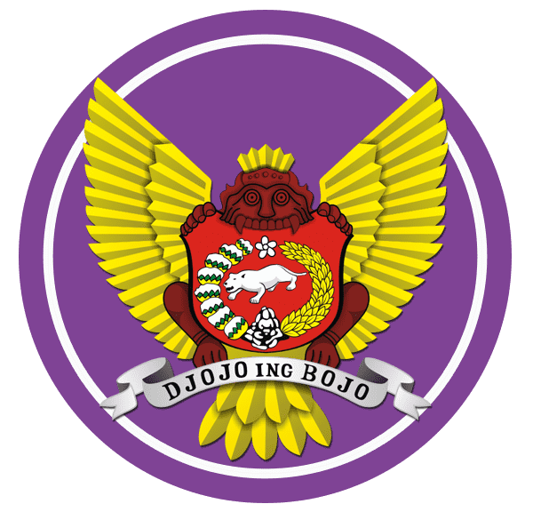

|
 |
Pusat Ruang Sumber Belajar Guru Nusantara
Nusantara-Teacher Room Resources Center (TRRC)
Guru dituntut untuk mampu mengembangkan desain pembelajaran dan asesmen yang berpusat yang mampu meningkatkan kompetensi literasi, numerasi, dan karakter. Pengembangan pembelajaran dan asesmen tersebut memerlukan konteks dalam penguatan kompetensi literasi dan numerasi. Kendala guru-guru dalam mengembangkan pembelajaran dan asesmen adalah mengoleksi dan memilih konteks yang sesuai dengan capaian pembelajaran/tujuan pembelajaran. Mikrosite ini menyediakan berbagai alternatif konteks personal, sosial-budaya, dan saintifik yang diperlukan oleh guru. Mikrosite ini merupakan living document yang terus dikembangkan serta terbuka bagi guru dan dosen yang ingn berkontribusi dalam menambah konteks-konteks yang lebih relevan dan muktair. Penyediaan mikrosite ini merupakan bagian dari program Pengabdian kepada Masyarakat (PKM)-Kemitraan Masyarakat yang didanani oleh Direktorat Riset, Teknologi, dan Pengabdian kepada Masyarakat Kemdikbudristek Tahun 2024 yang dilaksanakan oleh Prodi Pendidikan Biologi, Tim Universitas Nusantara PGRI Kediri dengan SMPN 5 Kota Kediri bersama Dinas Pendidikan Kota Kediri dan Cabang Dinas Pendidikan Wilayah Kediri.